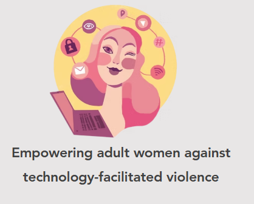
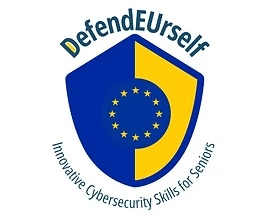
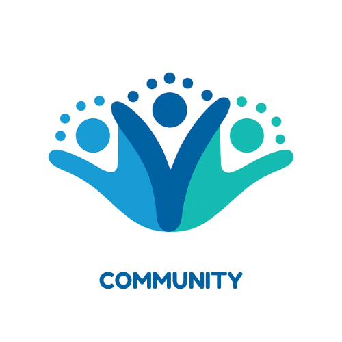
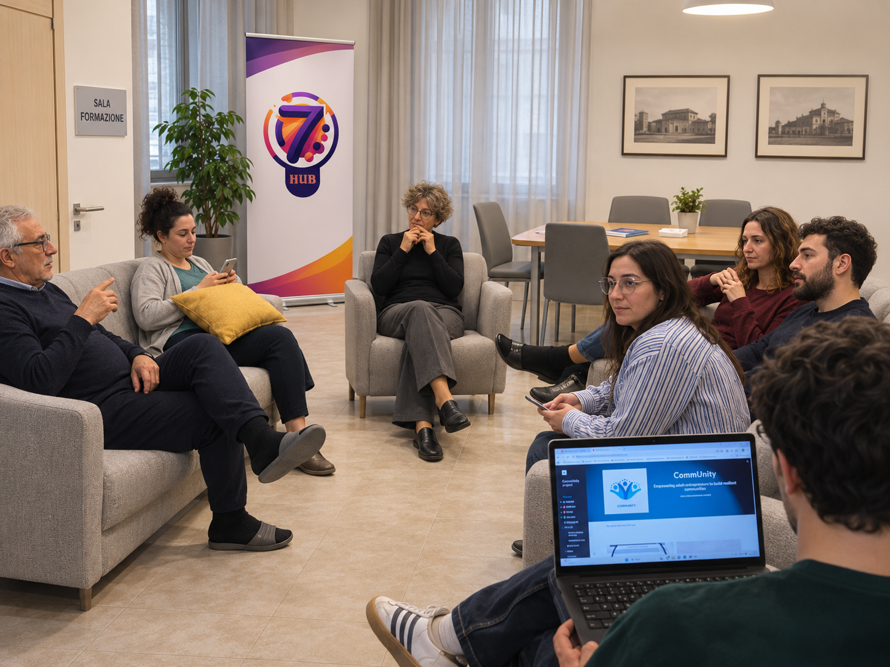
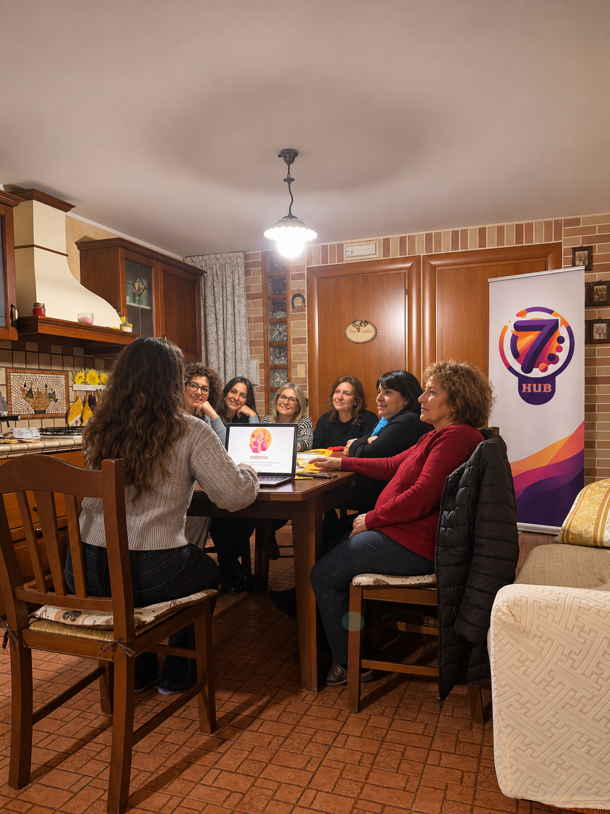

Play.
Digitize.
Connect.
7Hub è un ETS pugliese che unisce gamification, digitalizzazione, cittadinanza attiva e memoria dei territori. Lavoriamo soprattutto in Puglia e nel Tavoliere delle Puglie, trasformando contenuti complessi in esperienze accessibili, partecipate e visivamente riconoscibili.
La nostra identità: creativa, digitale, partecipativa.
Il viola, il magenta e l’arancione raccontano un laboratorio che unisce creatività, strumenti digitali e partecipazione.



Quattro modi di generare cambiamento.
Gamification
Serious games, demo, escape room e metodologie partecipative per apprendere facendo.
Apri la sezioneDigitalizzazione per la PA
Strumenti, percorsi e idee concrete per Comuni, scuole e servizi pubblici locali.
Scopri di piùBackup di Comunità
Un progetto territoriale che salva, custodisce e restituisce la memoria delle persone.
Vai al progettoProgetti europei e iniziative territoriali.
Dalla cybersecurity alla rigenerazione del suolo, fino alla memoria delle comunità: esplora le esperienze e gli strumenti di 7Hub.
SOIL4FUTURE
Competenze verdi, suolo, permacultura e gamification per la formazione VET.
ESSENTIAL
Prevenzione della violenza facilitata dalla tecnologia con strumenti concreti, materiali e gioco.
DefendEUrself
Cybersecurity e competenze digitali per adulti e senior, con approccio interattivo e divulgativo.
CommUnity
Imprenditorialità adulta, coesione e comunità resilienti, con eventi e confronto internazionale.

Backup di Comunità
Ascolto delle memorie, archivio digitale, QR code e restituzione pubblica alla comunità.
Circuito di Comunità
Territori, racconto e patrimonio motoristico con il supporto di strumenti digitali e culturali.
Foto e momenti reali del lavoro di 7Hub.



Le storie dei territori meritano di essere salvate.
Backup di Comunità è uno dei progetti che meglio raccontano 7Hub oggi: parte dall’ascolto, usa strumenti digitali semplici e restituisce alle comunità la propria memoria, senza trasformarla in un archivio freddo o distante.
Portiamo le idee nelle comunità.
Collaboriamo con enti locali, scuole e organizzazioni per progettare esperienze educative e digitali capaci di generare impatto.